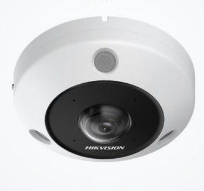

كل المنتجات ← كاميرات وأجهزة هيكفيجن
الموديل: DS-2CD6365G1-IVS(1.16mm)

| الماركة | هيكفيجن |
|---|---|
| الموديل | DS-2CD6365G1-IVS(1.16mm) |
| نوع المنتج | كاميرا فيش آي بانوراما |
| الكاميرا | |
| حساس الصورة | 1/1.8" Progressive Scan CMOS |
| أقصى دقة | 2560 × 2560 |
| أدنى إضاءة | Color: 0.01 Lux @ (F2.25, AGC ON),B/W: 0.005 Lux @ (F2.25, AGC ON),B/W: 0 Lux with IR |
| سرعة الغالق | 1 s to 1/100,000 s |
| ليلي/نهاري | IR cut filter |
| العدسة | |
| Lens Type | Fixed focal lens, 1.16 mm |
| Focal Length & FOV | 1.16 mm, horizontal FOV 180°, vertical FOV 180° |
| Iris Type | Fixed |
| Aperture | F2.25 |
| Depth of Field | 0.2 m to ∞ |
| Pixel Density | |
| DORI | D: 23.2 m O: 9.2 m R: 4.6 m I: 2.3 m |
| الإضاءة | |
| Supplement Light Type | IR |
| Supplement Light Range | Up to 15 m |
| Supplement Light Number | 3 |
| IR Wavelength | 850 nm |
| Smart Supplement Light | Yes |
| HEOP | |
| Open Resources | Memory: 60 MB, Smart RAM: 800 MB, eMMC: 2 GB |
| Computing Power | 2 TOPS |
| Open Capability | HEOP 2.0 OpendevSDK |
| Deep Learning Structure | Caffe,TensorFlow,PyTorch |
| Programming Language | C,C++ |
| الفيديو | |
| Main Stream | 50 Hz: 25 fps/60 Hz: 30 fps: Fisheye View: 2560 × 2560, 2048 × 2048, 1280 × 1280 180 Panorama View: 2048 × 1536, 1920 × 1440 180 Dual Channel Panorama View: 2048 × 768, 1920 × 720 Panorama View: 2048 × 1536, 1920 × 1440 4PTZ View: camera 01/camera 02/camera 03/camera 04: 1024 × 768 Fisheye + 3PTZ View: camera 01: 2048 × 2048, 1024 × 1024 camera 02/camera 03/camera 04: 1024 × 768 4PTZ Fusion View: 2048 × 1536, 1600 × 1200 |
| Sub-Stream | 50 Hz: 25 fps/60 Hz: 30 fps: Fisheye View: 720 × 720, 480 × 480 180 Panorama View: 640 × 480, 320 × 240 180 Dual Channel Panorama View: 640 × 480, 320 × 240 Panorama View: 640 × 360, 320 × 240 4PTZ View: camera 01/camera 02/camera 03/camera 04: 640 × 480, 320 × 240 Fisheye + 3PTZ View: camera 01: 720 × 720 camera 02/camera 03/camera 04: 640 × 480, 320 × 240 |
| Video Compression | Main stream: H.265+/H.265/H.264+/ H.264, Sub-stream: H.265/H.264/MJPEG |
| Video Bit Rate | 32 Kbps to 16 Mbps |
| H.264 Type | Baseline Profile,Main Profile,High Profile |
| H.265 Type | Main Profile |
| Bit Rate Control | CBR,VBR |
| Scalable Video Coding (SVC) | H.264 and H.265 encoding |
| Region of Interest (ROI) | 4 fixed regions for each stream |
| Fisheye Display | |
| Mount Type | Support wall/table/ceiling mounting |
| Decoding Mode | Support hardware decoding and software decoding |
| Display Mode | 20 display modes in total, Software decoding: fisheye view, 180 panorama view, 360 panorama view, 360 panorama + PTZ, 360 panorama + 3PTZ, 360 panorama + 6PTZ, 360 panorama + 8PTZ, 2PTZ, 4PTZ, fisheye + 3PTZ, fisheye + 8PTZ, hemisphere, AR hemisphere, cylinder, Hardware decoding: fisheye view, 180 panorama view, 180 dual channel panorama, panorama view, 4PTZ, fisheye + 3PTZ, 4PTZ fusion |
| الصوت | |
| Audio Compression | G.711/G.722.1/G.726/MP2L2/PCM/MP3/AAC-LC |
| Audio Bit Rate | 64 Kbps (G.711ulaw/G.711alaw)/16 Kbps (G.722.1)/16 Kbps (G.726)/32 to 192 Kbps (MP2L2)/8 to 320 Kbps (MP3)/16 to 64 Kbps (AAC-LC) |
| Audio Sampling Rate | 8 kHz/16 kHz/32 kHz/48 kHz |
| Environment Noise Filtering | Yes |
| الشبكة | |
| Protocols | TCP/IP, ICMP, HTTP, HTTPS, FTP, SFTP, DHCP, DNS, DDNS, RTP, RTSP, RTCP, PPPoE, NTP, UPnP, SMTP, SNMP, IGMP, 802.1X, QoS, IPv4, IPv6, UDP, Bonjour, SSL/TLS, ISUP, ARP, WebSocket, WebSockets, SIP |
| Simultaneous Live View | Up to 20 channels |
| API | Open Network Video Interface (Profile S, Profile G, Profile T),ISAPI,SDK,ISUP, Support for Session Initiation Protocol (SIP) for integration with Voice over IP (VoIP) systems, peer to peer or integrated with SIP/PBX |
| User/Host | Up to 32 users 3 user levels: administrator, operator, and user |
| Security | Password protection, complicated password, HTTPS encryption, 802.1X authentication (EAP-TLS, EAP-LEAP, EAP-MD5), watermark, IP address filter, basic and digest authentication for HTTP/HTTPS, WSSE and digest authentication for Open Network Video Interface, RTP/RTSP over HTTPS, control timeout settings, security audit log, TLS 1.2, host authentication (MAC address) |
| Network Storage | NAS (NFS, SMB/CIFS),Auto Network Replenishment (ANR), Together with high-end Hikvision memory card, memory card encryption and health detection are supported. |
| Client | iVMS-4200,iVMS-4500,iVMS-5200,Hik-Connect |
| Web Browser | Plug-in required live view: IE 10, IE 11, Plug-in free live view: Chrome 57.0+, Firefox 52.0+, Edge 89+, Safari 11+, Local service: Chrome 57.0+, Firefox 52.0+, Edge 89+ |
| الصورة | |
| Image Parameters Switch | Yes |
| Image Settings | saturation,brightness,contrast,sharpness,white balance,AGC,adjustable by client software or web browser |
| Day/Night Switch | Day,Night,Auto,Schedule,Alarm Trigger |
| Wide Dynamic Range (WDR) | 120 dB |
| Image Enhancement | BLC,HLC,3D DNR,Distortion Correction,Defog |
| Privacy Mask | 8 programmable polygon privacy masks |
| Picture Overlay | LOGO picture can be overlaid on video with 128 × 128 24 bit bmp format. |
| الواجهات | |
| Ethernet Interface | 1 RJ45 10 M/100 M/1000 M self-adaptive Ethernet port |
| On-Board Storage | Built-in memory card slot, support microSD/microSDHC/microSDXC card, up to 256 GB |
| Built-in Microphone | Yes, 4 built-in microphones |
| Built-in Speaker | Yes, 1 built-in speaker |
| Audio | 1 input (line in), 3.5 mm connector, max. input amplitude: 3.3 Vpp, input impedance: 4.7 KΩ, interface type: non-equilibrium, 1 output (line out), 3.5 mm connector, max. output amplitude: 3.3 Vpp, output impedance: 100 Ω, interface type: non-equilibrium |
| Alarm | 2 inputs, 2 outputs (max. 24 VDC, 1 A) |
| RS-485 | 1 RS-485 (Half duplex, HIKVISION, Pelco-P, Pelco-D, self-adaptive) |
| Reset Key | 1 Reset Key |
| الأحداث | |
| Basic Event | Motion detection,video tampering alarm,alarm input and output,exception (network disconnected, IP address conflict, illegal login, HDD full, HDD error) |
| Smart Event | Line crossing detection, intrusion detection, region entrance detection, region exiting detection, scene change detection,audio exception detection,defocus detection, unattended baggage detection,object removal detection |
| Linkage | Upload to FTP/NAS/memory card,notify surveillance center,send email,trigger alarm output,trigger recording,trigger capture |
| وظائف التعلم العميق | |
| People Counting | Counts people entering, exiting and passing by separately (The data is stored in the flash.) Supports real-time uploading and uploading by statistic cycle Sends email reports on daily, weekly, monthly or annually basis Supports up to 3 detection regions, and independent arming schedule and linkage method |
| Queue Management | Supports up to 8 detection regions, and independent arming schedule and linkage method Supports 2 detection modes: regional people queuing-up, waiting time detection Generates reports to compare the efficiency of different queuing-ups and display the changing status of one queue Supports raw data export for further analysis Supports real-time data uploading and scheduled data uploading Regional people queuing-up: supports 4 alarm trigger conditions, including greater than threshold, less than threshold, equal to threshold, not equal to threshold Waiting time detection: supports 1 alarm trigger condition, including greater than threshold |
| Heat Map | A graphic description of visits (by calculating amount of people or amount of dwell time) in a configured area., Two report types are available, space heat map and time heat map line chart. |
| Intersection Analysis | Detects and analyze flow in an intersection-like scene, and generate reports Support one intersection of up to 10 ways |
| عام | |
| Power | 12 VDC ± 20%, 1 A, max. 11.5 W,two-core terminal block, PoE: IEEE 802.3af, Class 3, max. 12.5 W |
| الخامة | Metal |
| الأبعاد | Ø140.3 mm × 59.4 mm (Ø5.5" × 2.3") |
| Package Dimension | 260 mm × 230 mm × 135 mm (10.2" × 9.1" × 5.3") |
| With Package Weight | Approx. 1206 g (2.66 lb.) |
| Storage Conditions | -40 °C to 60 °C (-40 °F to 140 °F). Humidity 95% or less (non-condensing) |
| Startup and Operating Conditions | -40 °C to 60 °C (-40 °F to 140 °F). Humidity 95% or less (non-condensing) |
| Language | 33 languages: English, Russian, Estonian, Bulgarian, Hungarian, Greek, German, Italian, Czech, Slovak, French, Polish, Dutch, Portuguese, Spanish, Romanian, Danish, Swedish, Norwegian, Finnish, Croatian, Slovenian, Serbian, Turkish, Korean, Traditional Chinese, Thai, Vietnamese, Japanese, Latvian, Lithuanian, Portuguese (Brazil), Ukrainian |
| General Function | Heartbeat,flash log,password reset via email,password protection,one-key reset,anti-banding |
| Heater | Yes |
| Cable Length | 0.31 m (1.02 ft.) |
| الاعتمادات | |
| EMC | CE-EMC: EN 55032:2015+A1:2020, EN 50130-4:2011+A1:2014, EN IEC 61000-3-2:2019+A1:2021, EN 61000-3-3:2013+A1:2019+A2:2021, EN 50121-4: 2016+A1:2019, RCM: AS/NZS CISPR 32: 2015, IC: ICES-003: Issue 7, KC: KN32: 2015, KN35: 2015 |
| Safety | UL: UL 62368-1, CB: IEC 62368-1: 2014+A11, CE-LVD: EN 62368-1: 2014/A11: 2017, BIS: IS 13252 (Part 1): 2010/IEC 60950-1: 2005 |
| Environment | CE-RoHS: 2011/65/EU, WEEE: 2012/19/EU, Reach: Regulation (EC) No 1907/2006 |
| Protection | IP67: IEC 60529-2013,IK10: IEC 62262:2002 |